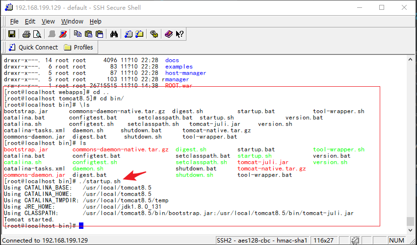
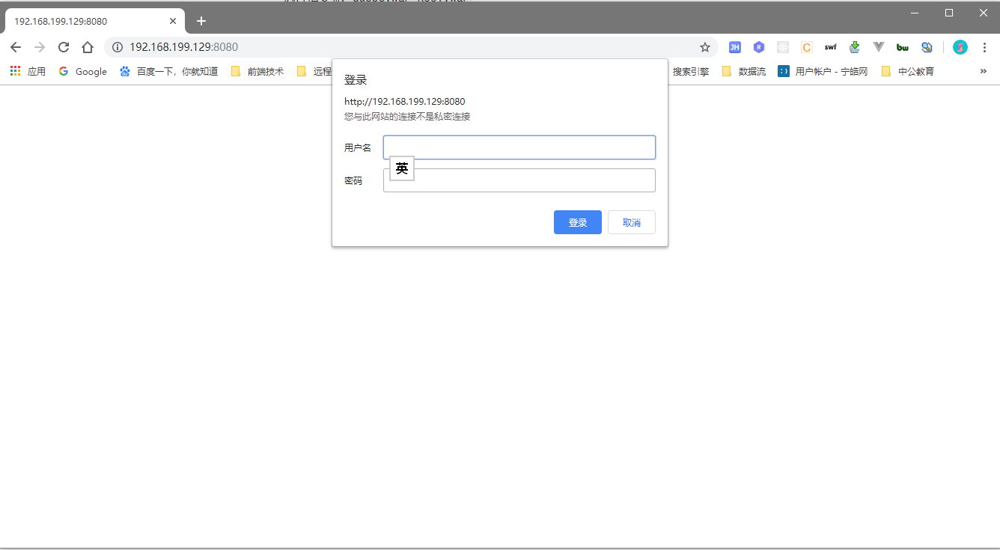
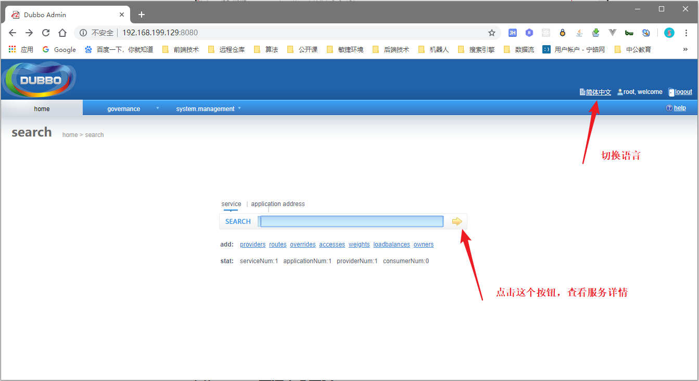
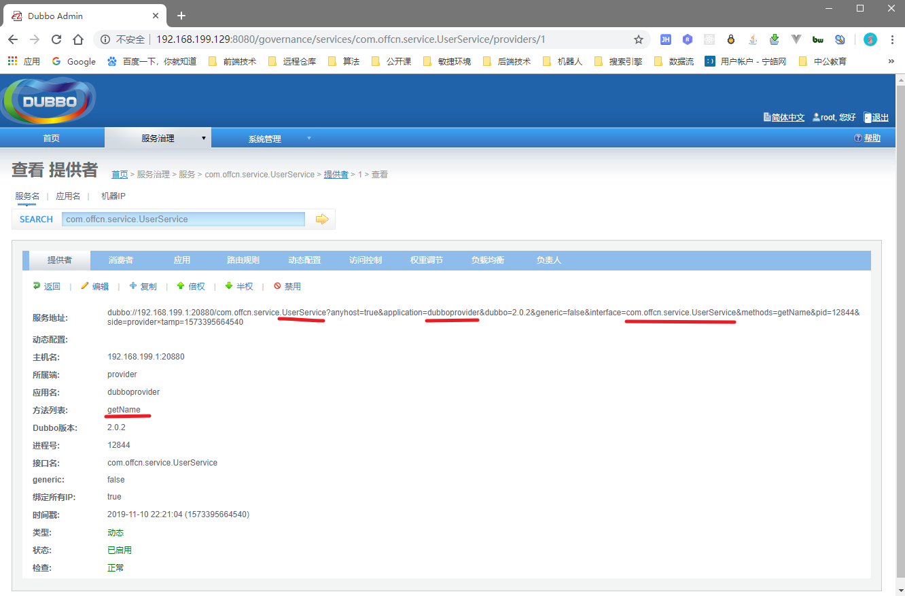

一，上传tomcat至centos
操作同JDK上传操作，同样将tomcat放置在root目录下。
二，释放安装文件
- 执行指令
tar -zxvf apache-tomcat-8.5.15 -C /usr/local,将安装程序释放到/usr/local文件内 - 执行指令
cd /usr/local进入目标目录 - 执行指令
mv apache-tomcat-8.5.15/ /tomcat8.5- 这步操作主要是嫌弃原先路径太长~~~，没什么特殊含义，任性而已
三，上传监控中心war包并部署
操作同JDK上传操作，同样将D:\youlexuan\source\2.dubbo2.6.1\dubbo-admin-2.6.1.war 上传到root目录下
- 执行指令
mv dubbo-admin-2.6.1.war /usr/local/tomcat8.5/webapps/dubbo.war- 该指令能够修改文件名字，也可以移动文件
- 执行指令
cd /usr/local/tomcat8.5/webapps/进入tomcat应用目录 - 执行指令
rm -rf ROOT迭代删除ROOT文件夹 - 执行指令
mv dubbo.war ROOT.war- 将dubbo程序鸠占鹊巢，成为tomcat默认主站
四，启动tomcat服务器
- 执行指令
cd /usr/local/tomcat8.5/bin,进入tomcatbin目录 - 执行指令
./startup.bat，启动tomcat服务器

五，在开发机的浏览器输入虚拟机地址+8080端口访问tomcat

- 用户名：root
- 密码：root
六，dubbo监控中心主页

七，受监控服务列表
八，受监控服务详细信息
